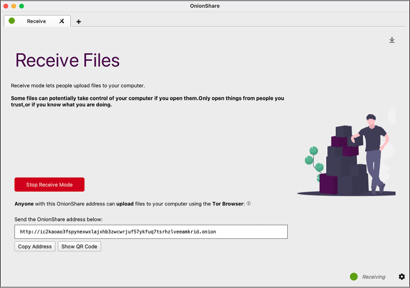
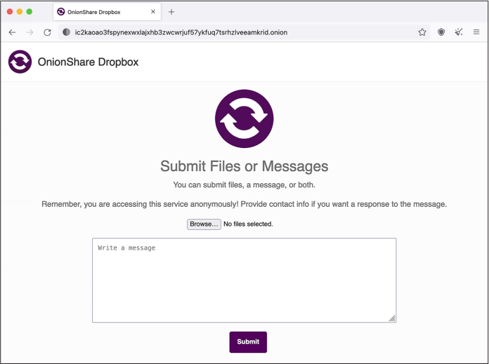
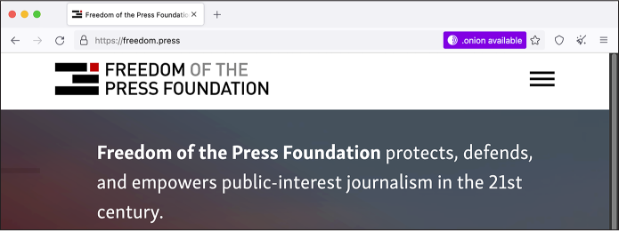

As an intelligence analyst working for the US Army, Manning needed regular access to these databases, so she downloaded them for work purposes. Having a local copy would be useful in a war zone where network access can be unreliable. It wasn’t until later that month that she decided to leak them to the public, after realizing they documented American war crimes in Iraq and Afghanistan. They would soon become some of the most significant public datasets of the 21st century. “I believe that if the general public, especially the American public, had access to the information contained within the Iraq War Logs and Afghan War Logs, this could spark a domestic debate on the role of the military and our foreign policy in general,” she later said at her court martial hearing.
At the SCIF computer, Manning compressed the files using a program called WinRAR, burned them to a rewritable CD, and left them in the SCIF for easy reference. A few weeks later, at the end of her shift on a Friday night, she slipped the CD into her cargo pocket and headed to her dorm, where she copied the data to her laptop. Eventually, she copied it to the SD card in her digital camera, and on January 23 she flew into the Reagan National Airport just outside of Washington, DC, with the SD card in hand.
In 2010, massive leaks like this were unprecedented. Today, they happen all the time. Back then, WikiLeaks was the only place for sources to go—traditional newsrooms weren’t prepared to handle leaks like this. Now, however, there are lots of options: sources can send documents to a transparency collective like Distributed Denial of Secrets (DDoSecrets), they can contact journalists directly using tools like Signal and OnionShare, or they can get in touch with a newsroom by following instructions on its public tips page.
In this chapter, you’ll learn best practices for safely acquiring public and private datasets. You’ll learn more about the history of WikiLeaks and DDoSecrets, then use a technology called BitTorrent to obtain your own copy of the BlueLeaks dataset from DDoSecrets. You’ll download the Signal instant messaging app to securely communicate with sources and learn about PGP encryption, an alternative method of securing messages. You’ll practice sending data anonymously with Tor and OnionShare, then read the story of how I communicated with a source using several of these tools. Finally, I’ll outline several more ways to securely receive data from sources, including techniques appropriate for professional newsrooms rather than individual reporters.
The End of WikiLeaks¶
After deciding she wanted to leak the War Logs, Manning first called a reporter at the Washington Post, but she didn’t feel like they took her seriously. She tried the New York Times but managed only to leave a voicemail, and the paper never returned her call. Finally, she settled on WikiLeaks, a leak site founded in 2006 by Australian information activist Julian Assange. This turned out to be a great choice at the time. In addition to publishing the documents, WikiLeaks worked in partnership with newspapers across the world, including the New York Times, the Guardian, and Der Spiegel, to break major stories about US imperialism. Along with the dataset of 250,000 State Department cables known as Cablegate, the two datasets that Manning leaked were a catalyst for the Arab Spring, the 2011 pro-democracy movement that led to the toppling of governments in the Middle East and North Africa, including the authoritarian regimes in Egypt and Tunisia.
Back then, WikiLeaks was revolutionary, initiating the document-based transparency movement by making massive datasets accessible to the public. The documents that Manning leaked were its first major releases with international consequences, making WikiLeaks a proof-of-concept for sites that allow anyone to anonymously submit leaked documents. Today, nearly every major newsroom in the US and many throughout the world have this capability using open source software like SecureDrop, though news organizations rarely publish raw datasets like WikiLeaks did.
Manning sent these datasets to WikiLeaks several years before the transparency group and its editor, Assange, shifted from a journalism outfit based on the premise that “information wants to be free” to an ethically dubious political organization working to get Donald Trump elected president in 2016. During that US election, WikiLeaks and Assange went off the rails. The group published a dataset full of hacked Democratic National Committee (DNC) and Clinton campaign email messages just in time to distract the news cycle from the infamous Access Hollywood audio clip of Trump bragging about committing sexual assault. Assange lied to the public about his source for this data (it was Russian military intelligence), boosting the conspiracy theory that Seth Rich, an unrelated Democratic Party staffer who was murdered in Washington, DC, was his real source. WikiLeaks also promoted the Pizzagate conspiracy theory claiming that high-ranking Democratic Party officials were involved in a child sex-trafficking ring run out of a pizza shop in DC.
Today, WikiLeaks is little more than an X (formerly Twitter) account. Its document submission systems have stopped working, and its website is no longer maintained. The loss of WikiLeaks to the online fever swamp was tragic for investigative journalism around the world, but a new and better organization has grown to take its place: DDoSecrets.
Distributed Denial of Secrets¶
Distributed Denial of Secrets, or DDoSecrets, is a nonprofit transparency collective in the US founded by Emma Best in 2018. It’s similar to WikiLeaks, but without the toxic ego of Julian Assange and with considerably more transparency around the group’s decision-making, and it’s largely run by queer people.
DDoSecrets hosts data previously published by WikiLeaks, like the DNC Emails dataset, as well as those WikiLeaks declined to publish, like the Dark Side of the Kremlin dataset, which contains over 100GB of documents and emails from Russian oligarchs and politicians. Notably, it also hosts a great deal of data leaked in the months following Russia’s invasion of Ukraine in February 2022. At that time, hackers—mostly claiming to be hacktivists, many identifying with the Anonymous hacktivist movement—bombarded Russia with cyberattacks. They hacked dozens of Russian organizations, including government agencies, oil and gas companies, and finance institutions, and submitted tens of terabytes of data to DDoSecrets to distribute to the public and to journalists.
NOTE I work closely with DDoSecrets as an adviser and sometimes volunteer.
Anyone can download the following datasets from DDoSecrets:
BlueLeaks
BlueLeaks is a collection of 270GB of documents from hundreds of US law enforcement and police fusion center websites, released during the height of 2020’s Black Lives Matter uprising. You’ll know this dataset well by the end of this book, and you’ll download a copy of it in this chapter’s first exercise.
Parler
The Parler dataset contains 32TB (yes, terabytes) of video scraped from the right-wing social network Parler, including many from the January 6, 2021, anti-democracy riot at the US Capitol. Many of these videos were used as evidence in Donald Trump’s second impeachment inquiry. You’ll learn more about this dataset in Chapter 11.
Epik Fail
The Epik Fail dataset includes 10 years of domain name registrar data from Epik, a company that’s notorious for hosting domain names and websites for neo-Nazis and other extremist groups. You’ll explore this dataset in Chapter 12.
In addition to public datasets like these, DDoSecrets hosts many private datasets available only to journalists and researchers who request access. Datasets containing large quantities of PII, like names, email addresses, birth dates, or passwords, are often kept private. For example, the Oath Keepers dataset includes gigabytes of data from the American far-right paramilitary organization, including spreadsheets full of the group’s member and donor records. That part of the release is limited only to journalists and researchers who request access, but another part, 5GB of email and chat logs, is available to the public. You’ll download part of this release in Chapter 4 and work with it in Chapter 6.
DDoSecrets publishes many more datasets than these, and it continues to release new ones all the time. For an inventory of all of those available, as well as instructions on how to request access to the limited-distribution datasets, visit https://ddosecrets.com.
NOTE You won’t be able to share that DDoSecrets link on X. Shortly after DDoSecrets released BlueLeaks, Twitter permanently suspended the @DDoSecrets account and censored all links to https://ddosecrets.com, citing its selectively enforced policy against posting hacked data. Twitter, now X, prevents tweets or even DMs including DDoSecrets links from going through, though WikiLeaks has faced no such censorship.
DDoSecrets distributes public datasets using a protocol called BitTorrent. To download datasets, you’ll need to learn how to use it.
Downloading Datasets with BitTorrent¶
At the turn of the 21st century, long before services like Netflix and Spotify made online entertainment cheap and accessible to the public, peer-to-peer file-sharing services like Napster, LimeWire, and Kazaa enjoyed immense popularity because they made downloading pirated media and software so easy. The copyright industry quickly shut down these centralized services with lawsuits, but decentralized technologies rose from their ashes. The most popular of these is BitTorrent. In addition to piracy, BitTorrent is also frequently used to legally distribute large files like Linux operating systems, as well as massive datasets.
BitTorrent works well for sharing controversial data like BlueLeaks, because no one—not the US government, police departments, tech companies, internet service providers, or anyone else—can easily censor it. Traditionally, one computer on the internet hosts data (on a website, for example), and all other computers connect to that host to download it. If someone wants to censor that data, they only have to bring down that single host. With BitTorrent, however, data is hosted in swarms, a collection of computers currently sharing a specific set of files. If you want to download some data, you join the swarm by opening a link to the data, called a torrent, in your BitTorrent software and become a peer. Your BitTorrent software downloads pieces of the data that you need from other peers in the swarm, and in return, you upload pieces of data you already have to peers who need it. Once you have all of the data you need, you can remain in the swarm and continue sharing with peers as long as you keep your BitTorrent software open, making you a seed. If you have the internet bandwidth and are allowed to share the files, it’s generally good practice to keep seeding, especially if there are few other seeds.
Every BitTorrent swarm needs to have at least one seed in order to enable the peers to finish downloading all the data. The more popular the data, the bigger the swarm, the faster the downloads—and the more difficult censorship becomes. It’s hard to block access to every peer in a swarm (swarms can grow to have tens of thousands of peers), and nothing stops more peers from joining. There’s no single entity to sue or pressure financially. Swarms often consist of computers distributed around the world, so national laws also can’t achieve the censorship they might otherwise aim for.
There is nothing illegal about using BitTorrent to share files that you’re legally allowed to share. Blizzard Entertainment has even adopted the technology itself to distribute large video games like World of Warcraft to its users, and the Internet Archive, the nonprofit digital library at https://archive.org, uses BitTorrent to distribute large files like radio and TV shows. The structure of BitTorrent hosting makes for faster downloads, and bandwidth costs are shared throughout the swarm.
Most publicly available DDoSecrets datasets are distributed through BitTorrent. In order to download something with BitTorrent, you’ll need the following:
- A program installed in your computer called a BitTorrent client. You can use whatever client you prefer, including a command line version, but I like one called Transmission. It’s free and open source and works great in Windows, macOS, and Linux.
- Either a .torrent file that you can open in your BitTorrent client or a magnet link, a type of URL that starts with magnet: and tells your BitTorrent client where to find the full .torrent file.
- Roughly 1TB of storage space, at least if you want to download the datasets used in this book. I recommend downloading to the encrypted datasets USB disk that you set up in Exercise 1-2.
In a moment, you’ll use BitTorrent to download a copy of the BlueLeaks dataset, but first let’s take a look at where that data originated.
The Origins of BlueLeaks¶
The disparate surveillance systems of local, state, and federal law enforcement agencies in the United States collected enough intelligence to learn critical clues about the September 11, 2001, terrorist attack before it happened. However, each agency kept this information to itself, failing to prevent the attack. Afterward, the US government decided these agencies needed to improve how they share information with each other. Congress directed the newly formed Department of Homeland Security (DHS) to create fusion centers across the country, collaborations between federal agencies like the DHS and FBI with state and local police departments, to share intelligence and prevent future terrorist attacks. These fusion centers are the source of much of the BlueLeaks data.
According to a 2012 Senate report, these fusion centers have “not produced useful intelligence to support Federal counterterrorism efforts,” and the intelligence reports they produced were “oftentimes shoddy, rarely timely, sometimes endangering citizens’ civil liberties and Privacy Act protections, occasionally taken from already-published public sources, and more often than not unrelated to terrorism.” Fusion centers had also been caught infiltrating and spying on anti-war activists, and in 2008, the American Civil Liberties Union published a report about fusion center abuses, including spying on religious groups in violation of the First Amendment.
In June 2020, a hacktivist self-identifying with the Anonymous movement hacked 251 law enforcement websites, most of them fusion centers and related organizations. The hacked data, known as BlueLeaks, includes thousands of police documents and spreadsheets with over 16 million rows of data. The data spans from 2007 to June 14, 2020, when the Black Lives Matter uprising triggered by the police murder of George Floyd was in full swing.
While the hacktivist from Anonymous violated the law when they broke into these police websites and stole all this data, in the US it’s legal for you to download BlueLeaks, investigate it, and publish your findings.
Exercise 2-1: Download the BlueLeaks Dataset¶
In this exercise, you’ll download a local copy of the BlueLeaks dataset onto the 1TB USB disk you encrypted in the previous chapter. You’ll be investigating the contents of this dataset later in the book.
Download Transmission (https://transmissionbt.com) or any BitTorrent client of your choice and install it on your computer following the instructions for your operating system. Load the BlueLeaks page on the DDoSecrets website at https://ddosecrets.com/wiki/BlueLeaks. From there, find the magnet link for the BlueLeaks torrent and copy that to your clipboard.
Next, open Transmission. Click File ▸ Open Torrent Address, paste the magnet link, and click Open to start downloading the data. When you first add this torrent to your client, it will ask where you want to save it. Save it to your datasets USB disk, then sit back and watch BitTorrent do its thing. It should connect you to the swarm, start downloading chunks of BlueLeaks from other peers (while possibly uploading chunks to other peers as well), and alert you when it’s done downloading. When the download completes, you’ll be seeding the BlueLeaks torrent and letting others download from you, until you remove the torrent from Transmission.
The 269GB download might take several hours, or even days if you have a slow internet connection. While you’re waiting, read on.
Communicating with Encrypted Messaging Apps¶
Most ways you communicate online aren’t very secure, even when you send messages that are ostensibly private. This is fine if you’re discussing nonsensitive information over Slack, SMS messages, or DMs on social media. However, when communicating with a confidential source who might face retaliation for talking with you, you should always use an encrypted messaging app.
Among encrypted messaging apps like WhatsApp and iMessage, Signal stands out as the best choice for source communications. Unlike other apps, Signal can’t be forced to share most information about its users with law enforcement or leak investigators, because it can’t access that user data in the first place. The only information the company can retrieve is the date that a user created their Signal account and the date that account most recently connected to Signal. Not even those who might typically be able to spy on your communications, like the messaging app’s employees, cloud hosting provider, or internet monitoring agencies, can access your Signal messages. Signal is the primary app I use for sensitive work communication, as well as for personal messaging. If I start out chatting with people on other platforms—SMS, DMs on social media, or anything else—I tend to move the conversation to Signal as soon as possible.
In more detail, here’s how Signal ensures that it has as little information about its users as possible:
- Since messages and calls are end-to-end encrypted, the Signal service can’t access their contents. This means if you type a Signal message to me on your phone (your end) and hit send, the Signal app will encrypt it for me, or in other words, create a totally scrambled version of the message so that it’s impossible for anyone but me to unscramble it. The encrypted message then goes to Signal’s servers, which forward it to my phone (my end). Once it’s on my phone, the Signal app can then decrypt it so I can read the original message. Signal’s servers themselves never have access to the original message, only the encrypted version, and they never have the ability to decrypt it—only message recipients do.
- Signal servers don’t store metadata, the records of when you send messages and to whom. They also can’t access your list of contacts or even the name and avatar associated with your own phone number.
- Signal invented a technology called sealed sender that uses cryptography to prevent anyone besides you and the recipient of your message from knowing whom you’re communicating with. Even if Signal secretly wanted to store your metadata (or if someone hacked Signal’s servers to monitor for metadata), they still wouldn’t have access to it.
- Signal doesn’t know which phone numbers are part of which Signal groups, or any metadata about the group, such as its name or avatar.
Signal’s code is open source, which lets experts inspect it for flaws and backdoors, and its encryption protocol has been peer reviewed by cryptography experts.
Signal’s security protocols stand in stark contrast to those of other encrypted messaging apps. WhatsApp, for example, routinely shares metadata with law enforcement, like exactly which phone numbers a surveillance target communicates with and when the target has used them. WhatsApp can even share this data in real time, allowing it to be used as evidence against whistleblowers like Treasury Department employee Natalie Mayflower Sours Edwards, mentioned in Chapter 1. When she was indicted in 2018 and accused of sharing a secret dataset to BuzzFeed journalist Jason Leopold, the evidence against her included real-time metadata from an encrypted messaging app. The metadata showed Edwards and Leopold exchanging hundreds of messages right as Leopold published multiple articles based on this dataset. Edwards and Leopold would have been better off if they had used Signal.
NOTE The web page https://signal.org/bigbrother/ lists the handful of times that Signal has been ordered to share data with law enforcement and how they responded. In all cases, Signal either didn’t share any data (because, as the organization says, “It’s impossible to turn over data that we never had access to in the first place”) or shared only the date that the target Signal account was created and the date that it most recently connected to the service.
For additional security, you can compare Signal safety numbers with another Signal user, allowing you to verify that the end-to-end encryption with that person is secure and isn’t being actively tampered with by the Signal service, your internet service provider, or anyone else. From a Signal conversation, you can tap on the name of the person you’re talking to at the top, then tap View Safety Number. This should show you your safety number, both as a number and as a QR code. If your safety number is the same as the other person’s, you can be sure that the end-to-end encryption is secure. If you’re physically in the same room, you can both use the safety number screen to scan each other’s QR codes to confirm. To confirm remotely, you can copy the safety number and paste it into a different messaging app (not Signal), then send it to the same person. If you confirm that your safety number matches, tap Mark as Verified. Once you’ve verified your safety number with a contact, Signal will make it clear that it’s verified and warn you if it ever changes—this could mean the encryption is under attack, but more likely it just means the person you’re talking to got a new phone, and you’ll have to verify them again.
Once Signal messages are on your device, they’re only as safe as your phone itself. Leak investigators searching your phone or your source’s phone will have access to all the messages on each device. To protect against device searches, always use Signal’s disappearing messages feature, which automatically deletes messages a set amount of time after you view them, unless you have a good reason to retain messages for a specific conversation. You can choose to delete messages anywhere between 30 seconds and 4 weeks after viewing, or set a custom time. I typically set disappearing messages to 4 weeks, change it to an hour or so if I’m sending secret information like a password, and then change it back to 4 weeks. In your Signal privacy settings, I recommend choosing to make all new conversations start with disappearing messages. You should also take steps to lock down your phone itself, like using a strong random passcode so that no one but you can easily unlock your device.
Signal is not only very secure but also very easy to use. Any two people with the app installed can send each other encrypted text messages, share encrypted files, and make encrypted voice and video calls or group chats for multiple users.
Exercise 2-2: Install and Practice Using Signal¶
In this exercise, you’ll install Signal on your phone and computer and practice using it.
Start with your phone: open the iPhone App Store or the Android Play Store and download the Signal Private Messenger app. After you open the app, you’ll need to verify your phone number and set a PIN (save this PIN in your password manager). Signal will also request some permissions. In my opinion, it’s perfectly safe to grant all of them. Signal uses the Contacts permission to discover which of your contacts also use the app, but in such a way that it can’t access your contact list itself. (If you grant access to your contacts, the app will notify you when one of them creates a Signal account.)
Next, download Signal on your computer from https://signal.org. After installing it, you’ll need to scan a QR code from your phone to set up your computer as a linked device. Keep in mind that your Signal messages will now be copied to both devices, so make sure to keep them both secure.
To practice sending encrypted messages, get some friends to install Signal too. Send them messages, play with disappearing messages, and try out encrypted voice calls and video calls. If you have enough friends on Signal, start a Signal group.
Encrypting Messages with PGP¶
In addition to communicating via secure messaging apps, you can also encrypt messages with PGP (“pretty good privacy”) encryption. This encryption method was first developed in 1991 to encrypt email. It has historically been very important in securely communicating with sources and other journalists; I used it extensively while reporting on the Snowden Archive. Compared to modern encrypted messaging apps like Signal, PGP is complicated and error-prone, so I recommend that you avoid it if you can and choose one of the better alternatives instead. However, you may find it useful in future investigations if one of your sources uses it.
PGP works like this: a user creates a file on their computer called a PGP key, which can be split into two parts, a public key and a secret key. If you have a copy of this user’s public key, you can use it to encrypt a message so that it can be decrypted only with that secret key. You can then email this scrambled message to the PGP user with the secret key. If anyone else gets access to that email, the message is scrambled and they can’t read it. When the person with the secret key checks it, though, they can decrypt it and read the original message.
People sometimes still send me PGP-encrypted email, and I use PGP to respond to them securely. You can find my PGP public key on my personal website, https://micahflee.com. I keep my PGP secret key on a USB device called a YubiKey, which looks kind of like a USB stick with a button on it. YubiKeys (and other security keys) are mainly used to lock down online accounts. Even if a hacker knows the username and password to my Google account, for example, they won’t be able to log in without first physically stealing my YubiKey, plugging it into their computer, and pressing its button while they try to log in. YubiKeys can also be used to securely store PGP secret keys.
Staying Anonymous Online with Tor and OnionShare¶
Tor and OnionShare are both important tools for working with sources who want to send you data anonymously and for conducting investigations where you need to remain anonymous yourself.
Tor is a decentralized network of volunteer servers called nodes. It keeps you anonymous online by bouncing your internet connection through a series of these nodes. Tor Browser is a web browser that sends all web traffic through the Tor network. Using Tor Browser works much like using Chrome or Firefox. Let’s say you want to anonymously visit the Organized Crime and Corruption Reporting Project’s (OCCRP) website at https://www.occrp.org. You simply open Tor Browser (which you can download from https://www.torproject.org), wait for it to connect to the Tor network, type occrp.org in the address bar, and hit ENTER, and the page will load.
NOTE I’ve been a volunteer in the Tor community for a long time, attending the nonprofit’s physical gatherings around the world, sometimes running Tor nodes to contribute to the network, and developing software related to Tor.
Tor Browser operates more slowly than a normal browser, because it bounces your web traffic between three random Tor nodes around the world before sending it to the OCCRP website. No single node knows both your real IP address, which would reveal your location, and what website you’re visiting. This means you don’t need to trust the nodes to use them. Even if a Tor node is run by criminals or spies, they won’t be able to de-anonymize you, at least not without exploiting a vulnerability in the Tor network itself. When you close Tor Browser, everything about your browsing session gets deleted without leaving a trace on your local computer.
Since Tor allows users to be anonymous online, people routinely use it for hacking websites, creating accounts to spam or phish people, or engaging in similar activities. For this reason, plenty of websites (including Google) are often extremely suspicious of Tor traffic and make Tor users jump through additional hurdles like filling out CAPTCHAs or even blocking them altogether. Unfortunately, this is the price of online anonymity.
In addition to allowing internet users to remain anonymous, Tor can keep servers themselves anonymous. These servers are called Tor onion services (sometimes referred to as the dark web) and have domain names ending in .onion. You can load onion services only by using Tor. Like Tor Browser, onion services also pick three random Tor nodes to route their traffic through. When a user loads an onion site in Tor Browser, it actually requires six hops through the Tor network: three on the Tor Browser side and three on the onion service side.
NOTE The .onion domain name is derived from a cryptographic fingerprint of the public key that belongs to the onion service. The Tor protocol ensures that no one else can use that same name without knowing that onion service’s secret key.
OnionShare, which I first developed in 2014 and have been adding features to ever since, is software that makes it easy for anyone to run onion services, allowing them to anonymously and securely send and receive files. It runs a web server directly on your computer, makes that server accessible to others as an onion service, and shows you a .onion address to send to someone else. When you start an OnionShare service, you can choose between Share mode, which allows others to download specific files from your computer, or Receive mode, which allows others to upload files to your computer.
OnionShare also supports other modes. With Chat mode, for instance, you can spin up an anonymous chatroom. It doesn’t have as many features as a Signal group, but it keeps you significantly more anonymous. With Website mode, you can quickly host a static website—a simple website made up of HTML files and resources like images and JavaScript, but without any databases or code running on the server—as an onion service. If someone loads that address in Tor Browser, their connection bounces through the Tor network until it reaches your computer, then loads the website hosted by OnionShare.
Figure 2-1 shows the OnionShare software configured as an anonymous dropbox, allowing my URL recipient (such as a source) to anonymously and securely upload files directly to my computer.

Figure 2-1: OnionShare in Receive mode
For example, to use OnionShare to let a source send me data, I’d open OnionShare on my computer, connect to the Tor network, click Receive Files, and then click Start Receive Mode. The service would give me a URL like ic2kaoao3fspynexwxlajxhb3zwcwrjuf57ykfuq7tsrhzlveeamkrid.onion. I would send that URL to my source and wait. My source would then open Tor Browser; load that URL, which would load a website hosted directly on my computer; and then upload their files. Because OnionShare uses Tor, I’d have no way of learning my source’s IP address, and my source would have no way of learning mine.
Figure 2-2 shows what that web page would look like for my source.

Figure 2-2: Using Tor Browser to access the OnionShare Receive mode site shown in Figure 2-1
The URL I sent to my source starts with http:// and not https://. HTTPS encrypts traffic between the web browser and the web server; normally, with just plain HTTP, anyone monitoring the network can spy on exactly what you’re doing, what files your uploading, and what passwords you’re submitting into forms. Onion services are an exception to this rule, though, since the connection between Tor Browser and an onion service is already end-to-end encrypted. It’s possible to add HTTPS to an onion service, but doing so would be redundant and unnecessary. Also notice that the domain name part of the URL in Figure 2-2 is 56 random-looking letters and numbers followed by .onion. Unlike with normal domain names, you don’t get to choose onion service names. They all look like this.
OnionShare runs a web server directly on your computer. This means third-party companies don’t have access to any of the files that are shared in it, but also that you have to time things right. If I sent that OnionShare link and then closed my laptop so it went to sleep, my source wouldn’t be able to load the website until I woke my computer up again. OnionShare works best when you’re working with people in real time. However, because it uses the Tor network, it’s really slow. It might take many hours or even days to transfer gigabytes of data. To transfer especially large datasets, consider using a non-Tor method like those described later in this chapter.
NOTE *For more information, read the detailed documentation for OnionShare at https://docs.onionshare.org.
If you’re using OnionShare to send sensitive data, I recommend that you share OnionShare URLs only using encrypted messaging apps like Signal and avoid sending them over insecure communication channels like email or social media DMs. This will prevent anyone who has access to those insecure channels from loading the OnionShare URL first or modifying the OnionShare URL to trick your source into uploading documents to them, for example.
Exercise 2-3: Play with Tor and OnionShare¶
In this exercise, you’ll install Tor Browser and OnionShare on your computer and practice using them. Download OnionShare from https://onionshare.org and Tor Browser from https://www.torproject.org, and follow the instructions for your operating system.
Open Tor Browser, search for anything you like, and visit various websites to see how the online experience differs. The default Tor Browser search engine is DuckDuckGo, which works great over Tor. However, you’ll find that it’s frustrating to use Google, because it constantly forces you to prove you’re not a robot by filling out CAPTCHAs. Several websites have both clearnet versions (those accessible using normal web browsers) and .onion versions. If you’re using Tor Browser and visit a website that supports both, like https://freedom.press, you’ll see the .onion available button in the top right of the address bar. Clicking it should bring you to the onion version of that site.
Figure 2-3 shows the Freedom of the Press Foundation’s website in Tor Browser with the .onion available button.

Figure 2-3: The Freedom of the Press Foundation home page
Next, try using OnionShare. Open a Share Files tab, browse for some files on your computer, and start the service. Then open Tor Browser, load the OnionShare URL, and download those files. Test out small files, large files, and different settings. Then try setting up an anonymous dropbox to receive files: open OnionShare, open a Receive Files tab, and start the service. In Tor Browser, load the OnionShare URL and upload files to your computer. Again, test out small files, large files, and different settings.
Communicating with My Tea Party Patriots Source¶
This section describes a real-world example of how I gathered data from an anonymous source using several tools you’ve seen so far: Twitter DMs, a PGP-encrypted message, communicating via Signal, and receiving a dataset through OnionShare.
In the summer of 2021, a journalist sent me a DM on Twitter, passing along a note from someone else. The journalist had no idea what the note said, because it was PGP-encrypted. The note looked something like this:
-----BEGIN PGP MESSAGE-----
[lots of scrambled letters and numbers]
-----END PGP MESSAGE-----
I plugged in my YubiKey and used it to decrypt the PGP message. It simply said:
interested in data?
signal: [redacted phone number]
At the time, I didn’t publish my phone number directly on my social media bios or on my staff profile page on The Intercept’s website. If I had, this source could have just contacted me directly on Signal, which would have been much simpler. Nevertheless, using PGP ensured that all communication between us was end-to-end encrypted, and even though Twitter DMs were involved, Twitter didn’t have any communication metadata between my source and me.
I opened Signal Desktop on my computer, typed in the phone number I’d found in the PGP-encrypted message, and turned on disappearing messages for the conversation. I said hello and that I was interested in data. At this point I had a secure communication channel with my new source.
The source told me that they had hacked the Tea Party Patriots, a major US conservative organization that bills itself as one of the largest grassroots groups on the right. They wanted to send me a dataset that included membership lists, donation history, and petition data and asked how they should send it. I sent them an OnionShare link to upload the dataset directly to my computer.
I later learned from this dataset that the Tea Party Patriots organization isn’t nearly as grassroots as it claims: three ultra-wealthy donors—two of them billionaires—provided the bulk of the group’s donations. I also learned that the group’s claim of being a network of “over 3 million patriots” was wildly exaggerated: only 144,000 members were marked “active” in the hacked database. (Read my analysis of this dataset at https://theintercept.com/2021/08/05/tea-party-patriots-hacked-billionaire-donors/.)
Other Options for Acquiring Datasets from Sources¶
In this section, you’ll learn a couple more ways to communicate with sources when the skills you’ve learned so far don’t fit your needs.
Encrypted USB Drives¶
Some of your future sources may want to send you more data than is feasible to transfer over Tor. In that case, you can consider sending an encrypted USB drive through postal mail.
First, your source encrypts a USB hard drive or a small USB stick using a strong passphrase, via the technologies covered in Chapter 1, and then copies the dataset to the drive. Then they physically mail the USB drive to you. To remain anonymous, they can write your address on the package or envelope but leave the return address blank (at least in the US), attach the right amount of postage, and drop it in a public mailbox. Using an encrypted messaging app like Signal, your source can send you the encryption passphrase. When you receive the drive in the mail, you can use the passphrase to unlock the drive and access the dataset.
If the drive gets intercepted in the mail, the data is encrypted and impossible to access without the passphrase. However, the postal service will know exactly which public mailbox it was mailed from, and if your source isn’t careful, they might leave handwriting, fingerprints, DNA, or other clues to their identity in the package.
Keep in mind that sending an encrypted drive costs money, since you need to buy a hard drive and pay for postage, and the package might take a long time to arrive, so this isn’t the best option for time-sensitive data.
SENDING ENCRYPTED DATA VIA PUBLIC FILE-SHARING SERVICES¶
Rather than using an encrypted USB, your source can encrypt their data and upload it to a public file-sharing service like Mega or WeTransfer, if they have the technical skill to do so. The exact process is outside the scope of this book, but here’s the gist:
First, your source would need to encrypt the dataset, using one of the following methods:
- Compress the dataset in a password-protected ZIP file, using a strong passphrase. This protects only the file contents, not the filenames themselves, meaning your source may not want to use this method if the filenames in the dataset are sensitive.
- Use software like VeraCrypt (discussed in Chapter 1) to create an encrypted container that’s locked with a strong passphrase.
- Use some other disk encryption software that you and the source agree upon. For example, if you both use Macs, you can create an encrypted DMG file using macOS’s built-in Disk Utility instead of VeraCrypt.
Once they’ve encrypted the dataset, the source uploads it to a public file-sharing service. Depending on which service they use, they may need to create an account. If they want to remain anonymous to that service, they might create a temporary email address just for this task and take steps to protect their IP address with a VPN service or Tor Browser. (Uploading a huge dataset to a file-sharing service over Tor is still faster than uploading it to an onion service, because the data takes fewer hops over the Tor network.) Once the encrypted dataset is uploaded, the source sends you a link to it, along with the dataset’s passphrase. After you download the dataset, use the passphrase to decrypt it.
If anyone else gets access to the data stored on the file-sharing service—such as an employee of the service, or law enforcement after sending a subpoena demanding that the service hand over data—it will be impossible for them to decrypt the dataset without knowing the passphrase.
Virtual Private Servers¶
A virtual private server (VPS) is a virtual computer on the internet, hosted by a company like Amazon Web Services (AWS) or DigitalOcean and normally running the Linux operating system, that your source can use to share their data. You’ll learn the details of how to set up and work with a VPS in Chapter 4, but here we’ll discuss when they might be appropriate for a given investigation.
The VPS option has a few downsides: it works only if your source has the necessary technical skills, it costs a small amount of money, and it’s easy for your source to make mistakes if they’re trying to remain anonymous. On the upside, a VPS allows your source to use extremely reliable tools to transfer large amounts of data. These tools also support resuming the transfer if it fails midway, and you can even use a VPS anonymously over Tor.
It costs just a few dollars a month to rent a VPS—if you need to use it for only a day or two, it’s even cheaper—and you can specify how big its hard disk needs to be depending on how much data your source wants to send you. You can then enable your source to upload data to the server remotely using a technology called SSH, which stands for Secure Shell. Your source could encrypt the dataset before uploading it if they feel it’s sensitive.
Throughout this chapter, you’ve learned ways individual journalists can receive data from their sources. In the next section, I’ll introduce additional tools and techniques appropriate for established newsrooms.
Whistleblower Submission Systems¶
As mentioned earlier, when Chelsea Manning tried to contact the Washington Post and the New York Times to leak the War Logs to the public, neither paper was receptive or even really prepared to accept leaked datasets. Today that’s no longer the case. Dozens of major newsrooms now run their own whistleblower submission systems, making it simple to securely and anonymously submit leaked datasets or other tips.
Go to your favorite news site and see if you can find its tips page, which explains to potential sources and whistleblowers how to contact the newsroom securely. Here are a few examples:
- The Intercept: https://theintercept.com/source/
- Washington Post: https://www.washingtonpost.com/anonymous-news-tips/
- New York Times: https://www.nytimes.com/tips
- ProPublica: https://www.propublica.org/tips/
- CNN: https://www.cnn.com/tips/
- Guardian: https://www.theguardian.com/securedrop
- Globe and Mail: https://sec.theglobeandmail.com/securedrop/
The guidelines on these tips pages are all similar, instructing sources to securely contact the newsroom by either sending a message to a dedicated Signal phone number, physically mailing their documents using the postal service, or reaching out over the open source whistleblower submission software called SecureDrop.
The late information activist Aaron Swartz, along with journalist Kevin Poulsen, developed a platform in 2013 called DeadDrop for sources to securely communicate with and send documents to journalists. After Swartz’s death, Poulsen handed the project over to the Freedom of the Press Foundation, which renamed it to SecureDrop. At the time, I was the chief technology officer for the Freedom of the Press Foundation and contributed a significant amount of code to the project.
Like OnionShare, SecureDrop turns computers into anonymous dropboxes (also powered by Tor onion services) to enable file sharing. However, it’s designed for professional newsrooms. It runs on a dedicated server that’s always online and available for sources to use, and it forces more secure and paranoid behavior than OnionShare does—for example, it’s designed so that you can open documents sent through SecureDrop only in an air-gapped environment.
SecureDrop’s increased security protects sources who are potentially risking their lives, but that security comes at a cost. The platform requires a significant amount of work to set up and maintain, including the ongoing daily work of checking it for new submissions. I spent years checking SecureDrop for The Intercept, and I know that it can be frustrating jumping through security hoops when the vast majority of submissions are nonsense or could have been sent in an email. But the effort is worth it if it protects just one genuine whistleblower.
If you work with a newsroom or an organization that wants to accept datasets from sources or whistleblowers, create a tips page on your website and look into SecureDrop. You can learn more about the SecureDrop project at https://securedrop.org and read detailed documentation at https://docs.securedrop.org.
Summary¶
In this chapter, you learned about the demise of WikiLeaks and the genesis of DDoSecrets, and you downloaded a copy of the BlueLeaks dataset using BitTorrent. You’ve seen some common tools for securely communicating with sources, like Signal, Tor, and OnionShare. You’ve also learned about a few other techniques for securely and anonymously transferring large amounts of data, as well as about tips pages and SecureDrop.
The next chapter marks the beginning of Part II, where you’ll learn how to use the command line interface, a powerful text-based method of controlling your computer. This will prove essential for digging into datasets like BlueLeaks.